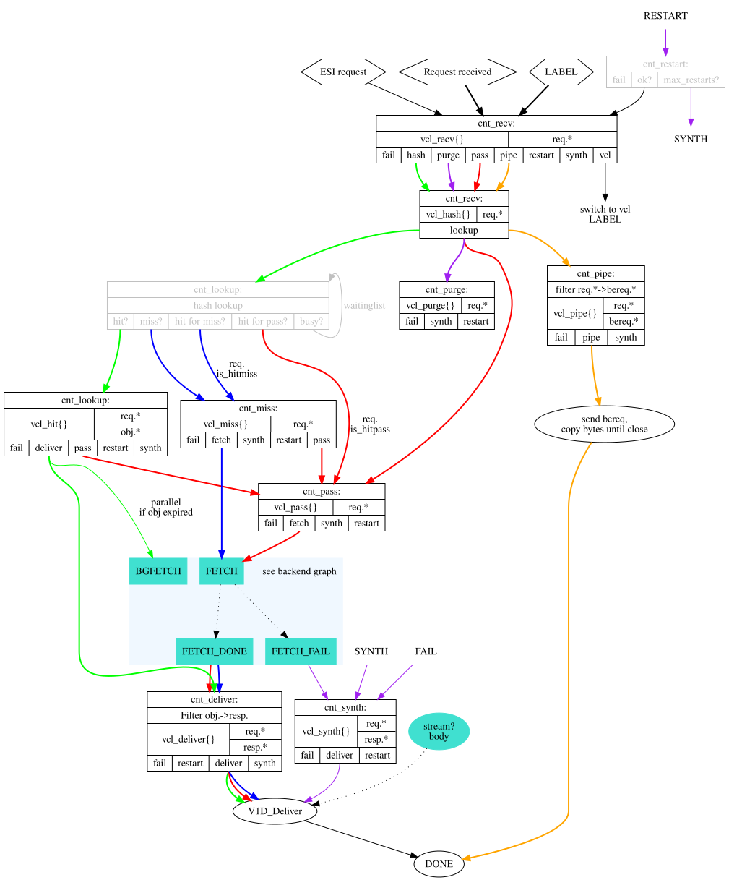
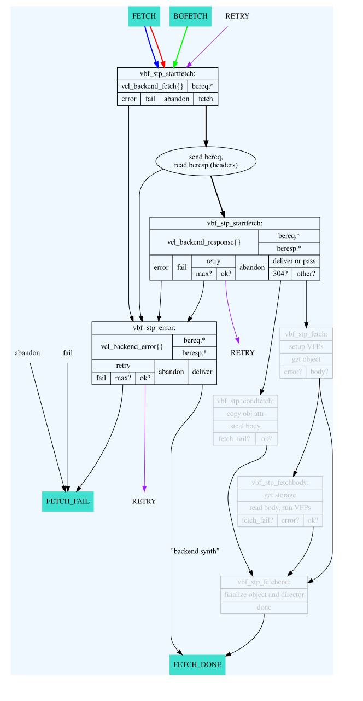

Varnish Processing States¶
Introduction¶
Varnish processing of client and backend requests is implemented as state machines. Whenever a state is entered, a C function is called, which in turn calls the appropriate Varnish core code functions to process the request or response at this stage. For most states, core code also calls into a state-specific function compiled from VCL, a VCL subroutine (see VCL Steps).
As a general guideline, core code aims to prepare objects accessible from VCL with good defaults for the most common cases before calling into the respective VCL subroutine. These can then be modified from VCL where necessary.
The following graphs attempt to provide an overview over the processing states, their transitions and the most relevant functions in core code. They represent a compromise between usefulness for core/VMOD developers and administrators and are intended to serve as the reference basis for derivative work, such as more VCL-centric views.
Client Side¶

Backend Side¶
